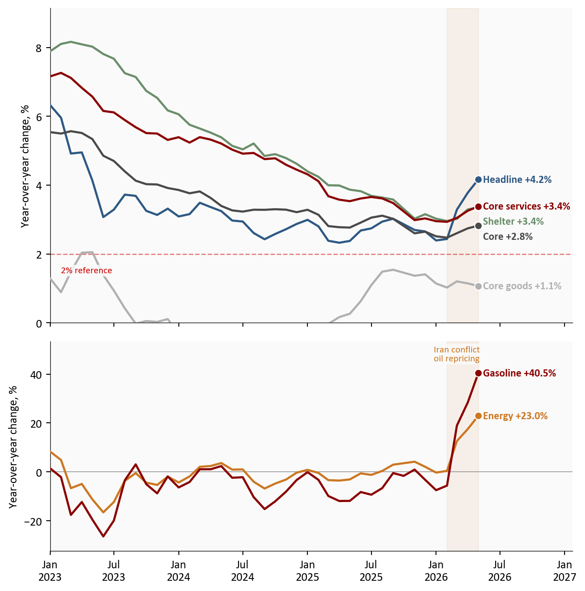
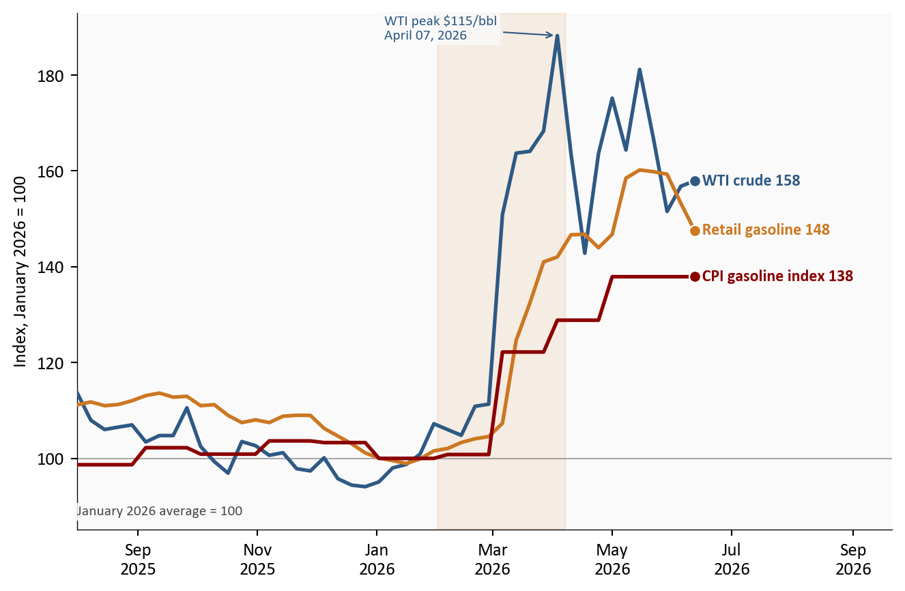

May 2026 CPI: Energy Shock From Iran War Tests Core CPI Stability - Passthrough Analysis and Implications
May 2026 CPI put headline inflation at +4.2% with energy up +23.0% and gasoline up +40.5%, while core held at +2.8% and core momentum cooled. A passthrough check before the June FOMC.
economics
inflation
energy
federal reserve
data visualization
Author
Yoram Gilboa
Published
June 13, 2026
Headline CPI YoY
+4.2%
vs April +3.8%
Energy CPI YoY
+23.0%
vs April +17.5%
Gasoline CPI YoY
+40.5%
vs April +28.4%
Core CPI YoY
+2.8%
MoM +0.2% vs +0.4%
BLS CPI release dated June 10, 2026 | Source: BLS via FRED
The May CPI report, released June 10, 2026, delivered the hottest headline inflation print of this cycle and, at the same time, the most reassuring core reading in months. Headline CPI rose to +4.2% year over year, up from +3.8% in April, with energy up +23.0% and gasoline up +40.5%. The driver is no mystery: the Iran conflict repriced oil starting in February, WTI crude1 peaked at $114.6 per barrel on April 07, 2026, spent 24 trading days above $100, and retail gasoline now averages $4.15 per gallon. Yet core CPI held at +2.8%, and core momentum actually cooled: +0.2% month over month versus +0.4% in April, with core goods prices falling outright. That combination frames the two questions this post works through with the data: is the energy shock leaking into core prices, and what does the answer mean for the Federal Reserve’s June 16-17, 2026 meeting?
NoteReproducing this analysis
The Python code used to generate each chart is included in this post. Click on any code block to see the full implementation. The complete data pipeline includes:
01_fetch_data.py - Fetches CPI, labor, oil, gasoline, and Treasury series from FRED
02_clean_data.py - Computes year-over-year and month-over-month changes on a complete monthly calendar, builds indexed energy-market series
04_compute_stats.py - Computes every statistic shown in this post from the cleaned data
All data sourced from FRED (BLS and EIA series). October 2025 CPI was never published, so year-over-year changes are computed with a calendar-month shift rather than a row shift; months whose comparison base is the missing month are left blank rather than approximated. The FOMC dot plot values come from the March 2026 Summary of Economic Projections, and the market-implied rate path is an author approximation from the CME FedWatch tool.
1. Headline and core: one report, two stories
The gap between what households experience and what the Federal Reserve watches has rarely been this wide. Headline CPI at +4.2% is the full consumer basket, and it is accelerating. Core CPI, which strips out food and energy, sits at +2.8% and is not. The decomposition below shows why that distinction is doing so much work right now: shelter eased to +0.3% month over month from +0.6%, core services momentum slowed to +0.3% from +0.5%, and core goods prices fell -0.1% on the month. Every part of the basket the energy shock would eventually infect is, for now, decelerating.
Show code
plot_df = cpi[cpi.index >="2023-01-01"]fig, (ax1, ax2) = plt.subplots(2, 1, figsize=(7.0, 7.0), sharex=True, height_ratios=[3, 2])top_series = [ ("Headline", "headline_yoy", COLORS["primary"]), ("Core", "core_yoy", COLORS["neutral"]), ("Shelter", "shelter_yoy", COLORS["secondary"]), ("Core services", "core_services_yoy", COLORS["accent"]), ("Core goods", "core_goods_yoy", COLORS["light"]),]for label, col, color in top_series: s = plot_df[col].dropna() # October 2025 was never published ax1.plot(s.index, s, color=color, linewidth=1.8, zorder=3) ax1.scatter(s.index[-1], s.iloc[-1], s=40, color=color, zorder=5, edgecolors="white", linewidth=0.8)ax1.axhline(2, color=COLORS["fed_target"], linestyle="--", linewidth=1, alpha=0.5)ax1.text(pd.Timestamp("2023-02-01"), 1.45, "2% reference", color=COLORS["fed_target"], fontsize=8, bbox=dict(facecolor="#fafafa", edgecolor="none", pad=1.5, alpha=0.85))ax1.set_ylabel("Year-over-year change, %")# Compute limits from the plotted data so no series is clipped if values shift.top_vals = pd.concat([plot_df[col] for _, col, _ in top_series])ax1.set_ylim(0, top_vals.max() *1.12)# Place every label just to the right of its endpoint dot, in the extended# margin where no line can run underneath it. Two series end at nearly the# same value (shelter and core services), so labels are spread vertically:# working from the highest value down, each label is pushed below the one# above it whenever the two would collide.ends =sorted( [(plot_df[col].dropna().iloc[-1], label, color) for label, col, color in top_series], reverse=True,)last_date = plot_df["headline_yoy"].dropna().index[-1]min_sep = (ax1.get_ylim()[1] - ax1.get_ylim()[0]) *0.048prev_y =Nonefor val, label, color in ends: y = val if prev_y isNoneelsemin(val, prev_y - min_sep) ax1.text(last_date, y, f" {label}{fmt_chg(val)}%", fontsize=9, color=color, va="center", fontweight="bold") prev_y = ybottom_series = [ ("Energy", "energy_yoy", COLORS["warning"]), ("Gasoline", "gasoline_yoy", COLORS["accent"]),]for label, col, color in bottom_series: s = plot_df[col].dropna() ax2.plot(s.index, s, color=color, linewidth=1.8, zorder=3) ax2.scatter(s.index[-1], s.iloc[-1], s=40, color=color, zorder=5, edgecolors="white", linewidth=0.8) ax2.text(s.index[-1], s.iloc[-1], f" {label}{fmt_chg(s.iloc[-1])}%", fontsize=9, color=color, va="center", fontweight="bold")ax2.axhline(0, color=COLORS["neutral"], linewidth=0.8, alpha=0.45)ax2.set_ylabel("Year-over-year change, %")bot_vals = pd.concat([plot_df[col] for _, col, _ in bottom_series])ax2.set_ylim(bot_vals.min() -6, bot_vals.max() *1.32)for ax in (ax1, ax2): ax.axvspan(SHOCK_START, plot_df.index[-1], color=COLORS["warning"], alpha=0.08) date_range = plot_df.index[-1] - plot_df.index[0] ax.set_xlim(plot_df.index[0], plot_df.index[-1] + date_range *0.22)ax2.annotate("Iran conflict\noil repricing", xy=(pd.Timestamp("2026-03-01"), bot_vals.max() *1.12), fontsize=8, color=COLORS["warning"], ha="center", zorder=5, bbox=dict(facecolor="#fafafa", edgecolor="none", pad=1.5, alpha=0.85))ax2.xaxis.set_major_formatter(mdates.DateFormatter("%b\n%Y"))plt.tight_layout()fig.savefig(IMG_DIR /"may-2026-cpi-passthrough-dashboard.png", dpi=150, bbox_inches="tight")

Figure 1: Headline CPI is accelerating on energy while every core component holds steady or decelerates. The top panel shows the slow-moving basket; the bottom panel shows the energy shock on its own, much larger, scale. The shaded band marks the Iran conflict oil repricing window. Source: BLS via FRED (CPIAUCSL, CPILFESL, CUSR0000SAH1, CUSR0000SASLE, CUSR0000SACL1E, CPIENGSL, CUSR0000SETB01). October 2025 CPI was never published; lines connect across that month.
The bottom panel is the shock; the top panel is the test. A year ago this divergence would have read as a curiosity. Today it is the entire policy debate, because the headline-minus-core gap of 1.3 percentage points is the widest of this cycle, and which line the other one converges toward decides the rest of 2026.
2. The passthrough chain: crude to pump to index
Energy passthrough happens in a sequence with measurable lags. Crude oil reprices in minutes. Retail gasoline follows over two to four weeks as wholesale costs work through distribution. The CPI gasoline index follows retail with another partial-month lag, because BLS samples prices throughout the month. The chart below puts all three steps on one scale, indexed to their January 2026 averages, the last calm month before the Iran conflict repricing.
Show code
m = energy_m[energy_m.index >="2025-08-01"]fig, ax = plt.subplots(figsize=(7.0, 4.6))chain = [ ("WTI crude", "wti_idx", COLORS["primary"]), ("Retail gasoline", "gas_retail_idx", COLORS["warning"]), ("CPI gasoline index", "cpi_gasoline_idx", COLORS["accent"]),]for label, col, color in chain: s = m[col].dropna() ax.plot(s.index, s, color=color, linewidth=2.0, zorder=3) ax.scatter(s.index[-1], s.iloc[-1], s=40, color=color, zorder=5, edgecolors="white", linewidth=0.8) ax.text(s.index[-1], s.iloc[-1], f" {label}{s.iloc[-1]:.0f}", fontsize=9, color=color, fontweight="bold", va="center")ax.axhline(100, color=COLORS["neutral"], linewidth=0.8, alpha=0.45)# The baseline note sits below all three series at the left edge of the# chart, so it cannot overlap the lines, which stay above the low 90s here.chain_vals = pd.concat([m[col] for _, col, _ in chain])ax.set_ylim(bottom=chain_vals.min() -9)ax.text(m.index[0], chain_vals.min() -4, "January 2026 average = 100", fontsize=8, color=COLORS["neutral"], va="top", bbox=dict(facecolor="#fafafa", edgecolor="none", pad=1.5, alpha=0.85))ax.axvspan(SHOCK_START, SHOCK_PEAK, color=COLORS["warning"], alpha=0.10)peak_idx = m["wti_idx"].idxmax()ax.annotate(f"WTI peak ${stats['wti_peak_2026']:.0f}/bbl\n{stats['wti_peak_2026_date']}", xy=(peak_idx, m["wti_idx"].max()), xytext=(-95, -2), textcoords="offset points", arrowprops=dict(arrowstyle="->", color=COLORS["primary"], lw=0.8), fontsize=8, color=COLORS["primary"], zorder=5, bbox=dict(facecolor="#fafafa", edgecolor="none", pad=1.5, alpha=0.85))ax.set_ylabel("Index, January 2026 = 100")ax.xaxis.set_major_formatter(mdates.DateFormatter("%b\n%Y"))date_range = m.index[-1] - m.index[0]ax.set_xlim(m.index[0], m.index[-1] + date_range *0.32)plt.tight_layout()fig.savefig(IMG_DIR /"crude-pump-cpi-chain.png", dpi=150, bbox_inches="tight")

Figure 2: WTI crude, retail gasoline, and the CPI gasoline index, each indexed to its January 2026 average. Crude moved first and has partially retraced; retail gasoline and the CPI index followed with the usual lags and have given back much less. Source: FRED (DCOILWTICO, GASREGW, CUSR0000SETB01). Weekly observations; the CPI gasoline index is monthly and steps at each release.
The asymmetry in the chart is the practical story. WTI peaked +90.8% above its January average and has since fallen back to $95.0 per barrel. Retail gasoline, up +47.6% from January, has barely retraced, which is typical: pump prices rise like a rocket and fall like a feather. For the CPI, this means June’s energy reading depends less on today’s crude price than on how quickly retailers pass the crude retracement through, and the May report captured the chain near its widest point.
3. How big is this shock? Contributions and history
Two reference points discipline the narrative. First, the decomposition: energy contributed roughly 1.5 percentage points of the +4.2% headline rate, about 36% of all inflation in the report from a category that is only 6.5% of the basket. Second, history: this energy shock is large, but it is not 2022. Energy CPI peaked at +41.5% in June 2022 and +29.3% in July 2008, and in both episodes the headline-minus-core gap blew out to around three percentage points, more than double today’s 1.3 points.
Figure 3: Top: approximate contributions to the May 2026 headline CPI rate; energy delivers about a third of all inflation from 6.5% of the basket. Bottom: energy CPI in historical context; the current shock is roughly half the size of the 2022 peak, with prior shock episodes shaded. Source: BLS via FRED. Contributions are approximate: BLS relative-importance weights (December 2025) applied to component year-over-year changes, with the residual bucket absorbing the remainder.
The 2022 comparison cuts both ways. Optimists note that the current shock is roughly half the 2022 peak and that core inflation entered this episode at +2.8% rather than above five percent. Pessimists note that in 2022 the passthrough into core took roughly two to three quarters to fully register, which means the May report may simply be too early to show it. Both readings are consistent with the data; the next two core prints decide between them.
4. The labor market backdrop: real wages turn negative
Passthrough needs a transmission mechanism, and the most important one is wages. Here the May evidence points toward containment. The May jobs report showed payrolls up +172k with unemployment steady at 4.3%, a labor market stabilizing rather than overheating. Average hourly earnings rose +3.4% over the year, unchanged in pace for months. With headline inflation at +4.2%, that arithmetic has turned real wage growth negative: -0.7% year over year in May 2026.
Figure 4: Nominal wage growth has been stable while headline inflation accelerated past it, pushing real wage growth below zero for the second time this cycle. A wage-price spiral would show nominal wages chasing inflation upward; the data show the opposite. Source: BLS via FRED (CES0500000003, CPIAUCSL). Real wage growth deflates average hourly earnings by headline CPI.
This is the chart that separates 2026 from the 1970s template. A wage-price spiral requires wages to chase prices upward. Instead, nominal wage growth is flat, hiring is concentrated in a few sectors, and the energy shock is eroding purchasing power rather than igniting compensation demands. That erosion is itself a disinflationary force: households absorbing a +47.6% gasoline increase have less to spend elsewhere, which is one reason core goods prices fell in May.
5. Policy and market implications
The Federal Reserve meets on June 16-17, 2026, and the May report effectively wrote the meeting’s script: acknowledge the headline, anchor on the core. Markets price a hold as a near certainty, with the CME FedWatch tool showing roughly 93% probability of no change.2 The more interesting question is the path. The March dot plot median still shows the funds rate at 3.375% by year-end, a full cut from the current 3.50-3.75% range. Market pricing has drifted hawkish of that, to roughly 3.55%, a bit less than half a cut. Meanwhile the Treasury curve has steepened: the 10-year yield at 4.53% now sits 40 basis points above the 2-year, as long rates absorb the inflation repricing while short rates stay pinned by the on-hold Fed.
Figure 5: Top: the March 2026 dot plot median path against the market-implied path; markets price less easing than the FOMC projects, and the June SEP update will show whether the committee concedes. Bottom: the 10-year minus 2-year Treasury spread has steepened through the energy shock. Source: FOMC Summary of Economic Projections (March 2026), CME FedWatch (June 12, 2026, author approximation), FRED (DGS10, DGS2, DFEDTARL, DFEDTARU).
For insurance and actuarial readers, this report lands directly on loss-cost assumptions. Energy and parts costs feed auto physical damage severity, and the +40.5% gasoline increase will, with the usual lag, suppress miles driven and claim frequency at the same time as it raises towing, materials, and replacement costs. Reserving against a +4.2% headline world while core trends at +2.8% means the choice of inflation index for trend assumptions matters more than usual: indexing severity to headline CPI overstates the persistent component if the energy shock fades, and understates it if passthrough arrives.
Conclusion
For the Fed: The May report argues for patience in both directions: too much headline inflation to cut, too little core pressure to hike. A hold on June 16-17, 2026 with a hawkish-leaning statement is the path of least resistance, and the updated dot plot will reveal how many participants still see a 2026 cut.
For consumers: The squeeze is real but narrow. Gasoline at $4.15 per gallon and negative real wage growth of -0.7% hit budgets now, while the slower-moving categories, shelter and services, are finally decelerating.
For markets and insurers: The data so far support the contained-shock scenario: core momentum halved in May, core goods deflated, and wages show no spiral. But containment is a verdict the data must re-earn every month. The July 14, 2026 CPI release, covering June, is the first month that will show whether the crude retracement reaches the pump, and the first that could show second-round effects if they are coming.
Limitations
The contribution decomposition uses approximate BLS relative-importance weights applied to year-over-year changes, not the exact BLS methodology; treat the bars as a reading frame, not an official decomposition.
The market-implied rate path is an author approximation from CME FedWatch pricing, not an official series; values shift daily.
October 2025 CPI was never published. Year-over-year calculations skip that base month cleanly, but multi-month averages spanning it cover fewer observations.
CPI is not the Fed’s preferred PCE inflation gauge; PCE typically runs a few tenths cooler, and the May PCE release arrives after the June FOMC meeting.
Recession-probability models are omitted because the standard published series lag by several months and would not reflect the current shock.
Methodology & Data
Data sources used in this analysis. All FRED series fetched by scripts/01_fetch_data.py.
Data current as of May 2026 CPI (BLS release: June 10, 2026); market data through June 08, 2026.
Footnotes
WTI: West Texas Intermediate, the benchmark grade of US crude oil. Its spot price is the standard reference for domestic oil costs, the same role Brent crude plays for international markets.↩︎
The FedWatch tool derives probabilities from 30-Day Fed Funds futures prices. The market-implied path shown here converts those probabilities into an expected rate, an author approximation as of June 12, 2026.↩︎